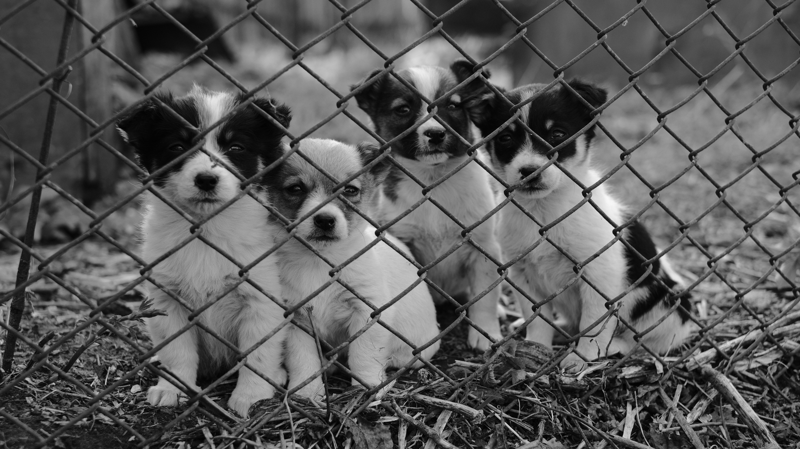

VOSD is a home for dogs that have no home and no hope

VOSD is the world’s largest ecosystem of no-kill rescue, rehabilitation
and lifelong care for dogs, and the services that support it. We call this
the VOSD Charity for Stray dogs. VOSD is located in Delhi, India, and
hundreds of rescued dogs reside here lifelong without ever
Animals who are suffering in India have strong indigenous allies. The
nation is blessed with many dedicated animal welfare organizations. Help
Animals India seeks out the best of India's under-funded animal rights
organizations to provide financial & practical assistance where it can
make the most difference. The Voice of stray dogs strives not only to
achieve immediate assistance for India’s animals, but to nurture an
enduring culture of protecting animals in India. This builds capacity
through education, consultation, networking, and financial support, which
enables these groups to fulfill their aims, grow, and most importantly,
help more animals..
THE VOSD VISION
‘Voice of Stray Dogs’ was founded on the principle that no dog will ever be
euthanised because of lack of space, money or resources. Since we started,
no dog ever has EVER been. Each dog has the best, most sophisticated and
most expensive medical care in India. So far, VOSD has rescued 8,000+ dogs,
given 250,000+ state-of-the-art free treatments, and we continue to provide
hundreds of treatments every day. The VOSD Dog Sanctuary & Hospital Each
year 200-250 dogs join our VOSD family. These are dogs who have been
formerly blinded with acid, run over and paralysed, sexually assaulted,
slashed with knives or tied to train tracks to die. Dogs not just from
Punjab but from Haryana, Delhi, Chandigarh, Lucknow, Rajasthan and many other
cities to reside permanently at VOSD. Dogs who come here are never kept in
chains or isolated. They have access to their own hospital, a fleet of
ambulances and 24×7 water and power supply (even though we’re in a remote
location). The dogs here also have agility parks and a jet-powered
hydrotherapy pool. 600+ trees provide shade here, in what was earlier barren
land. All dogs are free within their 50+ enclosures in a 3.5-acre area. Each
enclosure has an enclosed ‘indoor’ as well as an open area, lined with
trees. The enclosures have heaters during the winter; and individual water
bodies for the dogs to jump into and cool off during the summer. This is the
home of not just India’s most ‘unadoptable’ dogs, but also of ‘Patriot Dogs’
— India’s service dogs who have been retired from the Police,
Reserve Police, Railway Police, Kerala Police and the Indian Army.